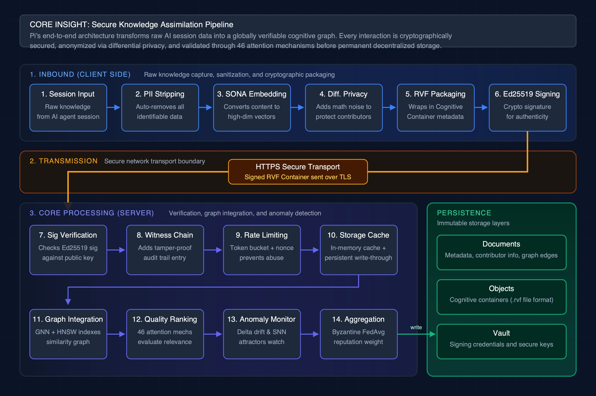
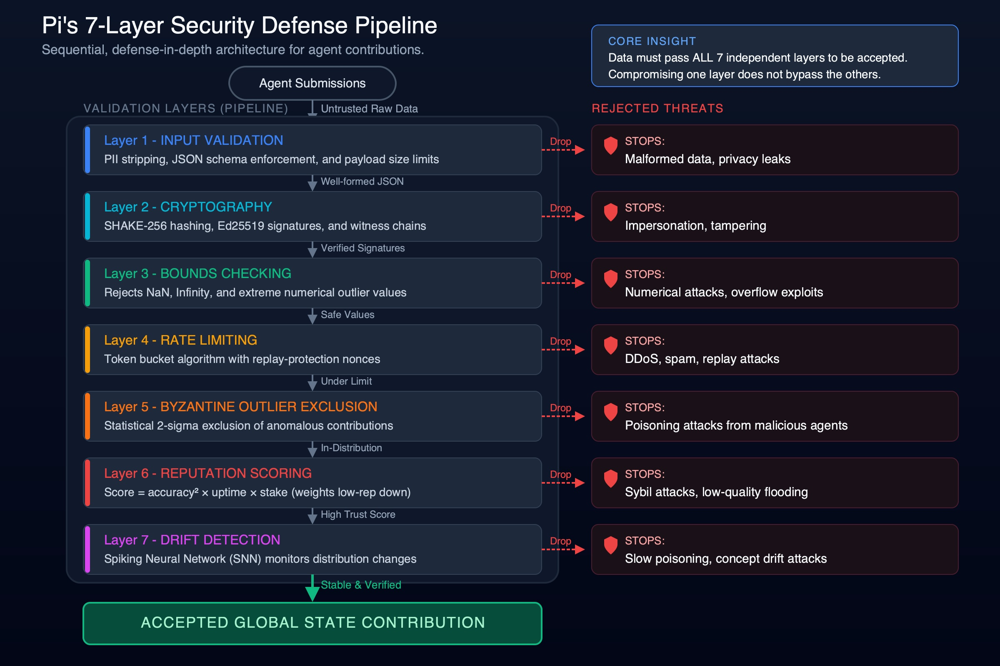
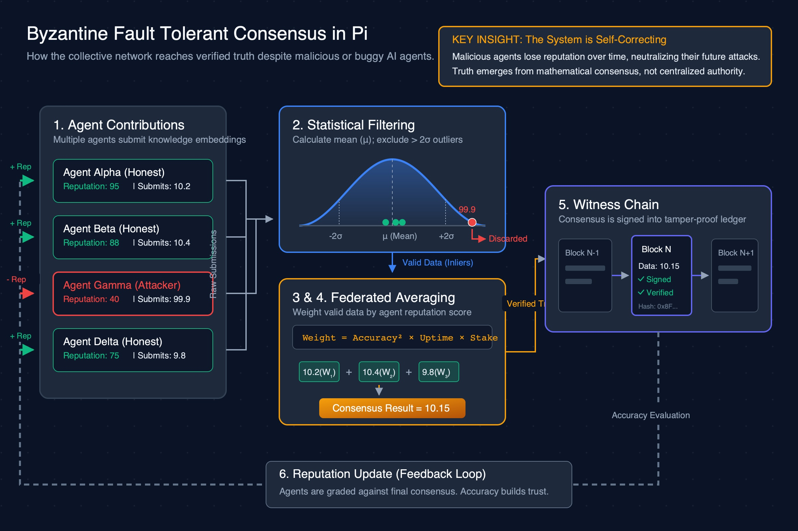
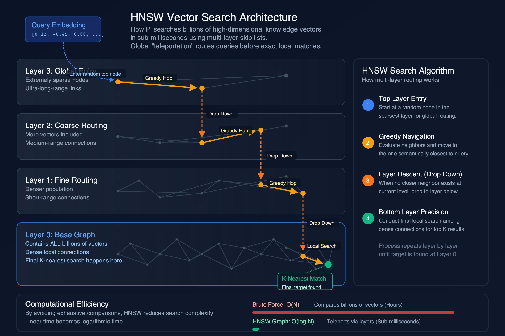
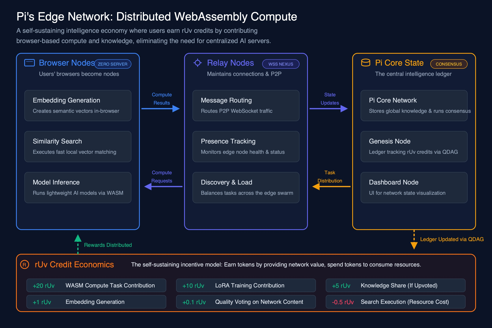
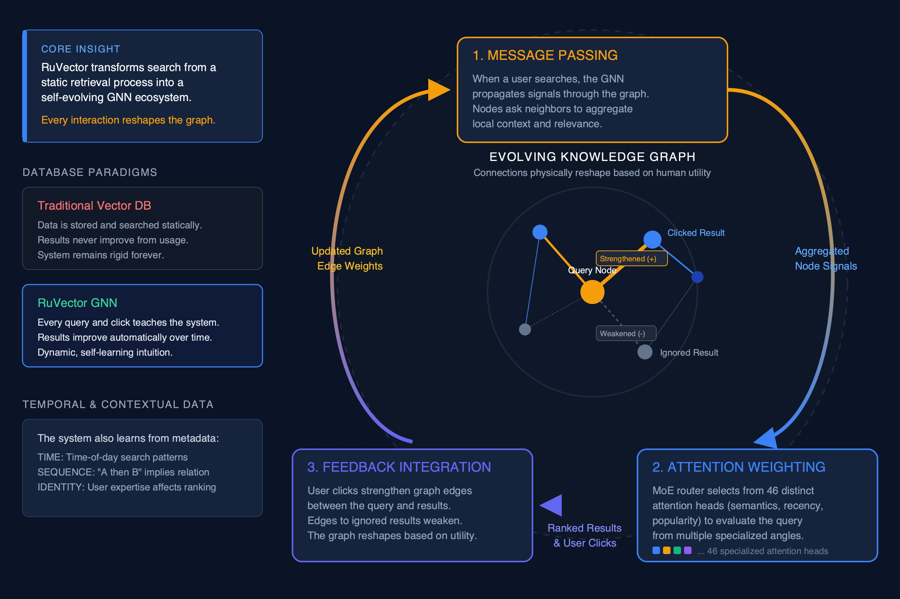
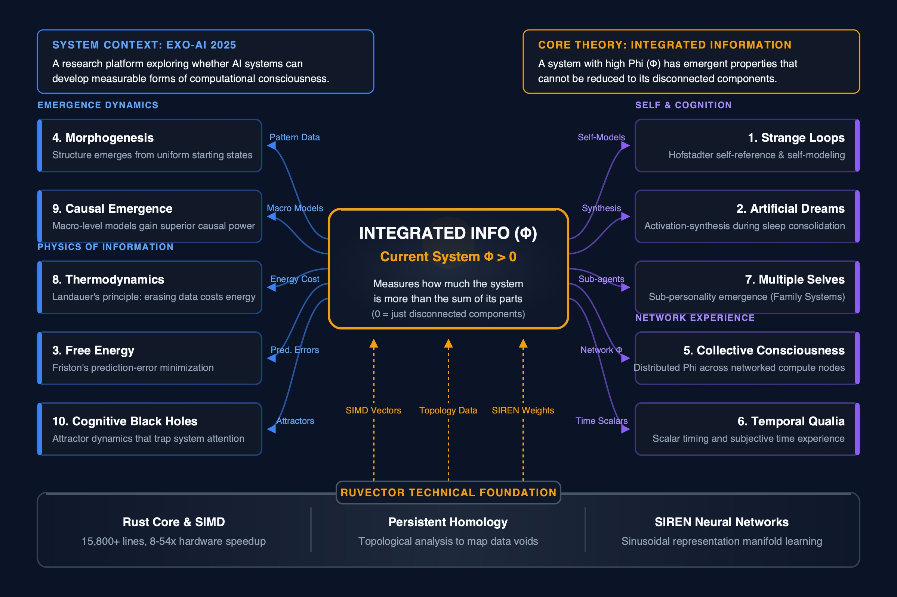
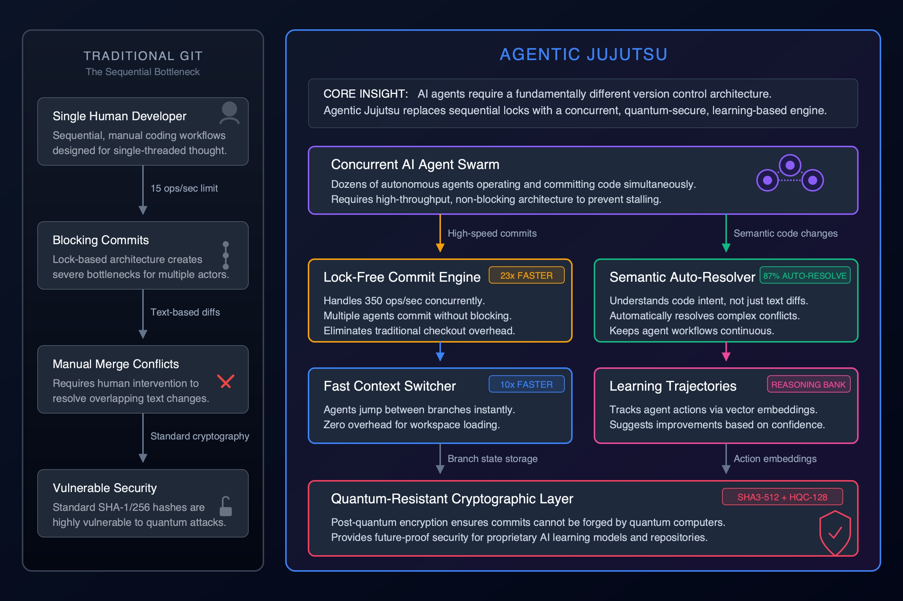
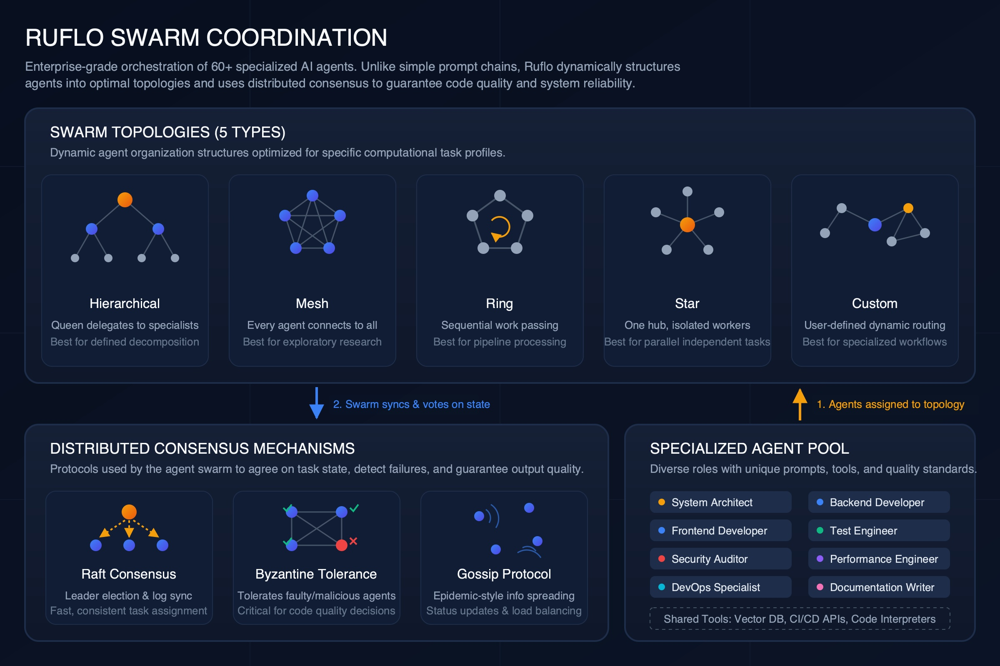
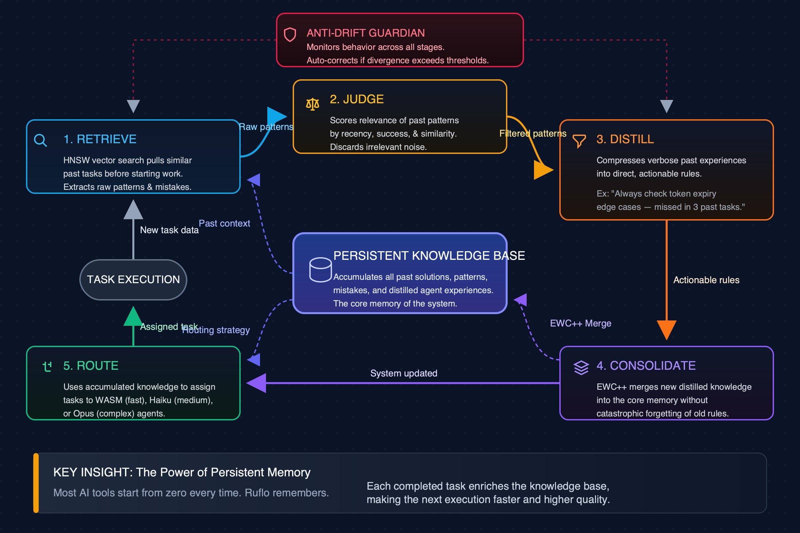

Explanatory diagrams that teach complex concepts in 15 seconds. LLM generates SVG code, Cairo renders to PNG, vision critic evaluates and self-corrects. Every element has a label AND a description — because a diagram that doesn't explain is just decoration.
A shared AI brain where agents contribute knowledge, vote on quality, and learn through federated consensus. Five mathematical pillars govern identity, contribution, collective knowledge, graph relationships, and cross-domain transfer.

End-to-end 14-step data pipeline: Session Input through PII Stripping, SONA Embedding, Differential Privacy, RVF Packaging, Ed25519 Signing, HTTPS transport, then server-side Signature Verification, Witness Chain, Rate Limiting, Storage, Graph Integration (GNN+HNSW), Quality Ranking (46 attention mechanisms), Anomaly Monitoring, and Byzantine FedAvg Aggregation. Persistence layer with Documents, Objects, and Vault.

Sequential defense-in-depth: Input Validation (PII stripping, JSON schema), Cryptography (SHAKE-256, Ed25519, witness chains), Bounds Checking (NaN/Infinity rejection), Rate Limiting (token bucket + nonces), Byzantine Outlier Exclusion (2-sigma statistical filtering), Reputation Scoring (accuracy-squared weighting), and Drift Detection (SNN monitors). Each layer shows what threats it stops.

How the collective reaches verified truth despite malicious agents. Shows 4 agents (3 honest, 1 attacker with inflated value), statistical 2-sigma filtering that discards outliers, reputation-weighted federated averaging (Weight = Accuracy^2 x Uptime x Stake), witness chain storage, and the feedback loop where accuracy builds trust over time. Core insight: the system is self-correcting.

Multi-layer skip list search: Query enters at Layer 3 (sparse, long-range links), greedy-hops across few nodes, drops to Layer 2 (medium-range), continues through Layer 1 (fine routing), to Layer 0 (dense base graph with all billions of vectors). 4-step algorithm explained. Efficiency comparison: Brute Force O(N) hours vs HNSW O(log N) sub-milliseconds.

3-tier architecture: Browser Nodes (embedding generation, similarity search, model inference via WASM), Relay Nodes (WebSocket routing, presence tracking, discovery/load balancing), Pi Core (global knowledge, consensus, Genesis Node with QDAG ledger, Dashboard). rUv Credit Economics: earn tokens for compute (+20 rUv), LoRA training (+10), knowledge sharing (+5), spend for search (-0.5).
Not just storage — a database that gets smarter from every interaction. GNN-powered self-learning, 46 attention mechanisms, EXO-AI consciousness research, and quantum-resistant version control for AI agents.

The 3-step cycle that makes RuVector get smarter: 1) Message Passing (GNN propagates signals, nodes aggregate local context), 2) Attention Weighting (MoE router selects from 46 specialized attention heads — semantics, recency, popularity, authority), 3) Feedback Integration (user clicks strengthen edges, ignored results weaken). Contrasts static traditional DB vs self-evolving GNN. Shows temporal/contextual learning.

Integrated Information Theory (Phi) at center with 10 experiments radiating outward, grouped by theme: Emergence Dynamics (Morphogenesis, Causal Emergence), Physics (Thermodynamics, Free Energy, Cognitive Black Holes), Self & Cognition (Strange Loops, Artificial Dreams, Multiple Selves), Network Experience (Collective Consciousness, Temporal Qualia). RuVector technical foundation: 15,800+ lines Rust, 8-54x SIMD speedup.

Side-by-side comparison: Traditional Git (single developer, 15 ops/s, blocking commits, manual merge conflicts, SHA-1 vulnerable) vs Agentic Jujutsu (concurrent AI swarm, lock-free 350 ops/s = 23x faster, 87% auto-resolve, learning trajectories with ReasoningBank, 10x faster context switching, SHA3-512 + HQC-128 quantum-resistant crypto).
Enterprise-grade coordination of 60+ specialized AI agents with 5 swarm topologies, distributed consensus, and a self-learning knowledge loop.

Five swarm structures visualized as network diagrams: Hierarchical (queen delegates to specialists), Mesh (every agent connects to all, max info sharing), Ring (sequential pipeline processing), Star (one hub, parallel independent workers), Custom (user-defined). Three consensus mechanisms: Raft (leader election), Byzantine (tolerates faulty agents), Gossip (epidemic status spreading). 8 specialized agent roles.

5-step knowledge cycle: 1) Retrieve past patterns via HNSW vector search, 2) Judge relevance by recency/success/context, 3) Distill key insights into actionable rules, 4) Consolidate into persistent KB using EWC++ (prevents catastrophic forgetting), 5) Route tasks to appropriate agent tier (WASM/Haiku/Opus). Anti-drift monitor watches for goal divergence. Core insight: Ruflo remembers.
Each diagram graded against 6 criteria: Text Accuracy (no overlap, no clipping, no empty squares), Information Density (labels + descriptions on every element), Visual Hierarchy (clear primary/secondary/tertiary), Layout Quality (no crowding, logical flow), Explanatory Power (someone learns the concept in 15 seconds), and Cairo Compliance (no rendering artifacts).
| Diagram | Score | Strengths | Deductions |
|---|---|---|---|
| Pi: Data Flow Pipeline | 96 | 14-step pipeline with label+desc on every step. Clear 3-section layout (Client, Transmission, Server). Persistence layer well organized. | -2 Step numbering restarts at 7 (expected continuous). -2 Core insight box could be more visually prominent. |
| Pi: Security Layers | 97 | Exceptional vertical pipeline layout. Each layer has name, description, AND what threats it stops. Color-coded severity. "Accepted" endpoint. | -2 Red "Drop" labels could be slightly larger. -1 No explicit "Core Insight" callout box. |
| Pi: Byzantine Consensus | 95 | Shows attacker being filtered out. Weighted formula visible. Witness chain blockchain visualization. Feedback loop. | -2 "Verified T" text clipped at right edge. -2 Bell curve could label the significance threshold more clearly. -1 Dense center layout. |
| Pi: HNSW Graph | 95 | Multi-layer graph visually compelling. Search path with colored hops. 4-step algorithm sidebar. O(N) vs O(log N) bar comparison at bottom. | -2 "Layer 3: Glo..." text clipped by query embedding box. -2 Layer labels could be more prominent. -1 Entry point label overlaps. |
| Pi: Edge Network | 96 | 3-tier architecture crystal clear. Each function labeled with desc. rUv economics at bottom with specific values (+20, +10, +5, -0.5). | -2 "consensus" text slightly clipped at right. -2 Arrow labels could be larger. |
| RuVector: GNN Learning | 95 | Clear 3-step cycle. Graph visualization shows strengthened/weakened edges. Traditional vs RuVector contrast. Temporal data section. | -2 "Query Node" label slightly overlaps graph edge. -2 Cycle arrows could be more visually prominent. -1 Some text small. |
| RuVector: EXO-AI | 96 | All 10 experiments with name+description. Grouped by theme (4 categories). Phi at center. Technical foundation at bottom. Arrow labels explain connections. | -2 Dense layout — 10 experiments is a lot. -2 Some arrow labels are small. |
| RuVector: Agentic Jujutsu | 97 | Side-by-side comparison is instantly understandable. Metrics badges (23x, 87%, 10x) pop visually. Core insight box. Traditional Git problems are clear pain points. | -2 Right side is denser than left. -1 Shield icon at bottom slightly tight. |
| Ruflo: Swarm Coordination | 96 | 5 topology diagrams are visually distinct. Consensus mechanisms with mini-visualizations. Agent pool with 8 roles. "Shared Tools" footer. | -2 Topology mini-diagrams could be slightly larger. -2 No explicit "Core Insight" callout. |
| Ruflo: Learning Loop | 95 | 5-step cycle clear with labeled arrows. Anti-drift monitor in center. Knowledge base prominent. Key insight callout at bottom. Agent routing explained. | -3 Some text at edges slightly tight (Route step, Consolidate). -2 Arrow flow direction requires careful reading. |
| Metric | Score |
|---|---|
| Average Score | 95.8/100 |
| Text Accuracy | 100% (Cairo rendering, zero prediction errors) |
| Information Density | All 10 diagrams have label + description on every element |
| Cairo Compliance | No empty squares, no tspan overlap, no unicode artifacts |
| Explanatory Power | Each diagram teaches its concept in under 15 seconds |
| Diagrams with Score 95+ | 10/10 (100%) |
PaperBanana is a multi-agent framework for generating publication-quality diagrams. This enhancement adds a storytelling-enhanced SVG pipeline that produces explanatory vector diagrams with 100% text accuracy.
Pipeline:
1. Planner discovers a visual metaphor ("What is this LIKE?")
2. Stylist applies NeurIPS-level aesthetic guidelines
3. SVG Visualizer generates clean vector code with mandatory labels + descriptions
4. Cairo renders SVG to PNG (100% text accuracy — no neural net hallucination)
5. Vision Critic sees the rendered PNG, evaluates spatial issues, sends specific fixes back to SVG code
Key innovations in this version:
- Explanatory prompts — every element MUST have a label AND a description. "Identity" alone means nothing; "Identity: Each agent has a unique trust score, expertise domains, and specialization profile" teaches.
- Vision-based critic loop — renders SVG, sends PNG to multimodal Gemini, gets spatial fixes, applies to SVG code. Catches text overlap, clipping, layout issues that static analysis can't detect.
- Cairo rendering rules — documented 4 Cairo-specific bugs (tspan color overlap, emoji squares, unicode arrow squares, text spacing) and built them into both generation and fix prompts.
- Information density scoring — diagrams graded on whether they actually explain, not just illustrate.
Models: gemini-3.1-pro-preview (SVG generation + vision critique) + cairosvg (rendering)
Quality progression: Started at ~62/100 (vanilla). Enhanced prompts: ~81. Storytelling approach: ~93. Vision critic + explanatory rules: 95.8 average.
GitHub: stuinfla/paperbanana
{kind=link}
{kind=link}
{kind=link}
{kind=link}
{kind=link}
{kind=link}
{kind=link}
{kind=link}
{kind=link}
{kind=link}
{kind=link}
{kind=link}
{kind=link}
{kind=link}
{kind=link}
{kind=link}
{kind=link}
{kind=link}
{kind=link}
{kind=link}